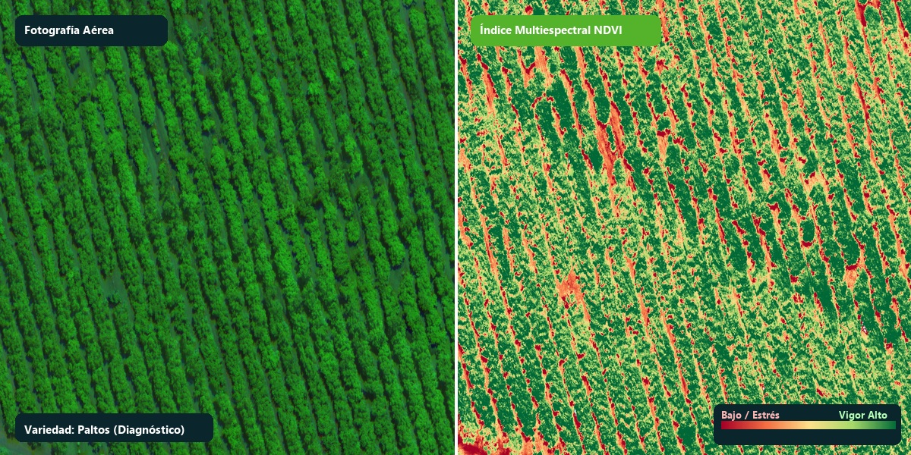
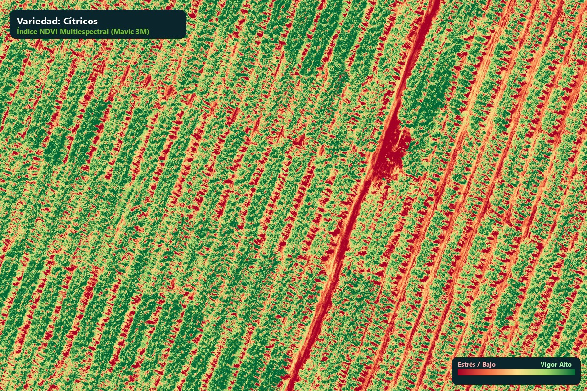
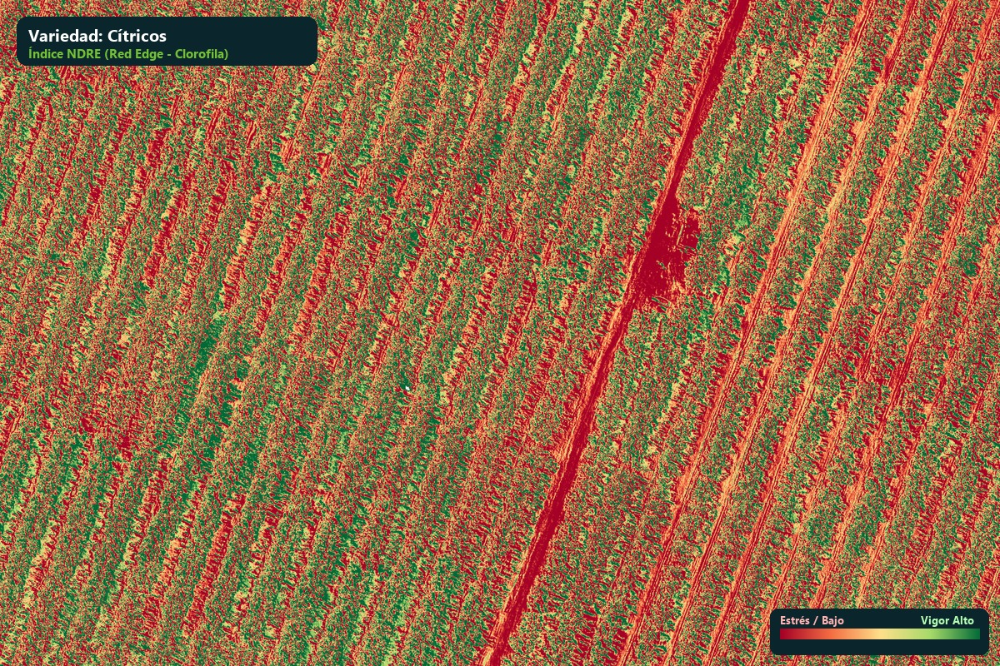
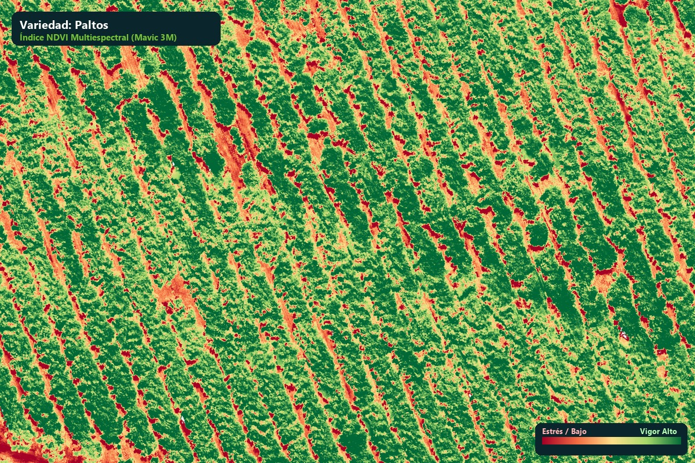

Fusionamos la precisión del dron multiespectral con el monitoreo en campo de Dromapp y la analítica predictiva de DROMOD para maximizar tu cosecha y reducir costos de insumos.

No solo entregamos imágenes aéreas; proporcionamos datos procesados, interpretados y listos para ejecutar aplicaciones agronómicas.
Ejemplos reales capturados con nuestros sensores multiespectrales calibrados radiométricamente. Descubre cómo se visualizan las diferentes variedades de cultivo en alta resolución.
A la izquierda, la ortofoto en luz visible muestra un follaje aparentemente homogéneo. A la derecha, el índice multiespectral NDVI revela variaciones críticas en el vigor vegetativo, identificando árboles con estrés hídrico o bloqueo radicular.

Variedad: CítricosDetección de densidad foliar y vigor fotosintético por hilera. Permite evaluar la uniformidad del marco de plantación y focalizar fertilizaciones foliares únicamente en las zonas con clorosis o bajo desarrollo.

Variedad: CítricosEn copas densas donde el NDVI se satura, el sensor Red Edge penetra estratos interiores de la planta para medir el contenido real de nitrógeno y clorofila foliar activa.

Variedad: PaltosInspección de cuarteles en palto con georreferenciación de precisión. Identifica plantas con decaimiento radicular o ataques fitosanitarios para verificación en campo mediante Dromapp.
AgroMod une hardware de última generación con herramientas de software desarrolladas específicamente para la realidad del campo agrícola.
Captura de alta precisión con sensor RGB de 20MP y sensor multiespectral de 4 bandas con módulo RTK para georreferenciación centimétrica sin necesidad de puntos de control en tierra.
Banda Verde, Rojo, Red Edge, NIRAplicación Android en manos de los evaluadores de campo. Permite muestreos fitosanitarios por árbol, cálculo de incidencia y severidad, toma de fotografías y registro GPS 100% offline.
Muestreo en Árbol & GPS OfflineCerebro central donde convergen las capas raster multiespectrales con las evaluaciones fitosanitarias de Dromapp, generando mapas de calor interactivos y órdenes de aplicación focalizada.
Mapas de Calor & PrescripciónIngresa las características de tu predio y obtén una estimación referencial inmediata con opción de agendar vía WhatsApp.